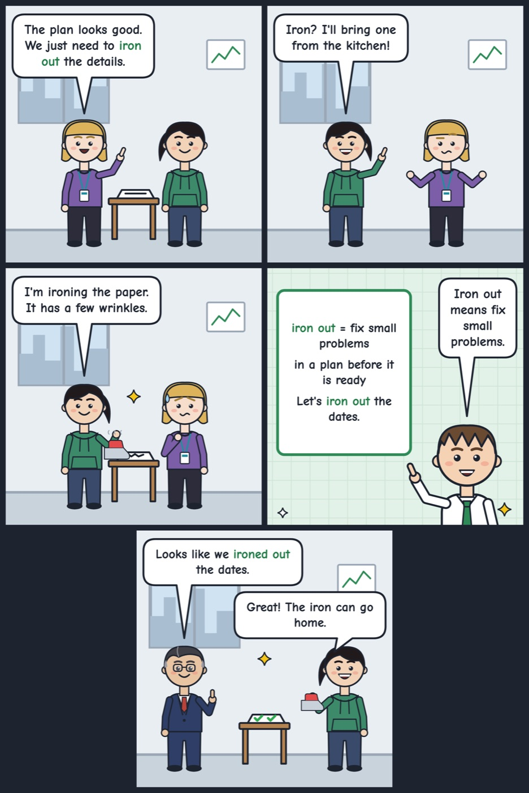

iron out
To solve small problems in a plan until it is ready.
We need to iron out the details before the launch.
Tip: Use it with a thing that needs fixing: 'iron out the details / problems / issues / kinks'; the object can go in the middle ('iron them out') or after.
Hear it in conversation
Workbook
1. What does it mean?
In this conversation, what does 'iron out' mean?
2. Fill the gap
The software mostly works, but the team still has a few bugs to before it goes live.
3. Choose the best reply
Olena: Our presentation is nearly finished, but the slides don't match the script yet.
4. Your turn: speak
Tell me about a time you had to organise something with other people. How did you make sure it went well?
Show an example answer
Last year I helped organise a family reunion, and at first nothing was clear: the date, the food, even the place. We met online a few times to iron out the details, and after that everything went smoothly. On the day, everyone knew exactly what to do.
Answer key: iron out
- 1. D. Solve the small remaining problems so the plan is ready
- 2. iron out
- 3. C. Don't worry, we'll iron out the slides and script by tomorrow and be ready.
- 4. Example: Last year I helped organise a family reunion, and at first nothing was clear: the date, the food, even the place. We met online a few times to iron out the details, and after that everything went smoothly. On the day, everyone knew exactly what to do.
See it in a comic
